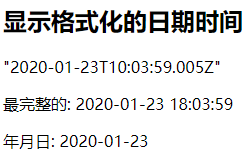

Vue 的核心知识
Vue 的基本认识
官网
英文官网: https://vuejs.org/
中文官网: https://cn.vuejs.org/
介绍描述
-
渐进式 JavaScript 框架
-
作者: 尤雨溪(一位华裔前 Google 工程师)
-
作用: 动态构建用户界面
Vue 的特点
-
遵循 MVVM 模式
-
编码简洁, 体积小, 运行效率高, 适合移动/PC 端开发
-
它本身只关注 UI, 可以轻松引入 vue 插件或其它第三库开发项目
与其它前端 JS 框架的关联
-
借鉴 angular 的模板和数据绑定技术
-
借鉴 react 的组件化和虚拟 DOM 技术
Vue 扩展插件
-
vue-cli: vue 脚手架
-
vue-resource(axios): ajax 请求
-
vue-router: 路由
-
vuex: 状态管理
-
vue-lazyload: 图片懒加载
-
vue-scroller: 页面滑动相关
-
mint-ui: 基于 vue 的 UI 组件库(移动端)
-
element-ui: 基于 vue 的 UI 组件库(PC 端)
Vue 的基本使用
效果 (01_HelloWorld/test.html)

编码
1 |
|
理解 Vue 的 MVVM
模板语法
效果

模板的理解
-
动态的 html 页面
-
包含了一些 JS 语法代码
a. 双大括号表达式
b. 指令(以 v-开头的自定义标签属性)
双大括号表达式
-
语法:
-
功能: 向页面输出数据
-
可以调用对象的方法
指令一: 强制数据绑定
-
功能: 指定变化的属性值
-
完整写法: v-bind:xxx=‘yyy’ //yyy 会作为表达式解析执行
-
简洁写法: :xxx=‘yyy’
指令二: 绑定事件监听
-
功能: 绑定指定事件名的回调函数
-
完整写法:
1 | v-on:keyup='xxx' |
- 简洁写法:
1 | @keyup='xxx' |
编码
1 |
|
计算属性和监视
效果

计算属性
-
在 computed 属性对象中定义计算属性的方法
-
在页面中使用来显示计算的结果
监视属性
-
通过 vm 对象的$watch()或 watch 配置来监视指定的属性
-
当属性变化时, 回调函数自动调用, 在函数内部进行计算
计算属性高级
-
通过 getter/setter 实现对属性数据的显示和监视
-
计算属性存在缓存, 多次读取只执行一次 getter 计算
编码
1 |
|
class 与 style 绑定
理解
-
在应用界面中, 某个(些)元素的样式是变化的
-
class/style 绑定就是专门用来实现动态样式效果的技术
class 绑定
-
:class=‘xxx’
-
表达式是字符串: ‘classA’
-
表达式是对象: {classA:isA, classB: isB}
-
表达式是数组: [‘classA’, ‘classB’]
style 绑定
-
:style="{ color: activeColor, fontSize: fontSize + ‘px’ }"
-
其中 activeColor/fontSize 是 data 属性
编码
1 |
|
条件渲染
条件渲染指令
-
v-if 与 v-else
-
v-show
比较 v-if 与 v-show
-
如果需要频繁切换 v-show 较好
-
当条件不成立时, v-if 的所有子节点不会解析(项目中使用)
编码
1 |
|
列表渲染
- 列表显示指令
数组: v-for / index
对象: v-for / key
- 列表的更新显示
删除 item
替换 item
- 列表的高级处理
列表过滤
列表排序
编码
列表渲染
1 |
|
列表的过滤和排序
1 |
|
事件处理
绑定监听:
-
v-on:xxx=“fun”
-
@xxx=“fun”
-
@xxx=“fun(参数)”
-
默认事件形参: event
-
隐含属性对象: $event
事件修饰符
-
.prevent : 阻止事件的默认行为 event.preventDefault()
-
.stop : 停止事件冒泡 event.stopPropagation()
按键修饰符
-
.keycode : 操作的是某个 keycode 值的键
-
.keyName : 操作的某个按键名的键(少部分)
编码
1 |
|
表单输入绑定
使用 v-model 对表单数据自动收集
-
text/textarea
-
checkbox
-
radio
-
select
编码
1 |
|
Vue 实例生命周期
生命周期流程图

vue 生命周期分析
- 初始化显示
- beforeCreate()
- created()
- beforeMount()
- mounted()
- 更新状态: this.xxx = value
- beforeUpdate()
- updated()
- 销毁 vue 实例: vm.$destory()
- beforeDestory()
- destoryed()
常用的生命周期方法
-
created()/mounted(): 发送 ajax 请求, 启动定时器等异步任务
-
beforeDestory(): 做收尾工作, 如: 清除定时器
编码
test.html
1 |
|
test2.html
1 |
|
过渡&动画
vue 动画的理解
-
操作 css 的 trasition 或 animation
-
vue 会给目标元素添加/移除特定的 class
-
过渡的相关类名
- xxx-enter-active: 指定显示的 transition
- xxx-leave-active: 指定隐藏的 transition
- xxx-enter/xxx-leave-to: 指定隐藏时的样式

基本过渡动画的编码
-
在目标元素外包裹
-
定义 class 样式
- 指定过渡样式: transition
- 指定隐藏时的样式: opacity/其它
编码 1

1 |
|
编码2

1 |
|
过滤器

理解过滤器
-
功能: 对要显示的数据进行特定格式化后再显示
-
注意: 并没有改变原本的数据, 可是产生新的对应的数据
定义和使用过滤器
- 定义过滤器
1 | Vue.filter(filterName,function(value[,arg1,arg2,...]){ |
- 使用过滤器
1 | <div>{{myData | filterName}}</div> |
编码
1 |
|
内置指令与自定义指令
常用内置指令
-
v-text : 更新元素的 textContent
-
v-html : 更新元素的 innerHTML
-
v-if : 如果为 true, 当前标签才会输出到页面
-
v-else: 如果为 false, 当前标签才会输出到页面
-
v-show : 通过控制 display 样式来控制显示/隐藏
-
v-for : 遍历数组/对象
-
v-on : 绑定事件监听, 一般简写为@
-
v-bind : 强制绑定解析表达式, 可以省略 v-bind
-
v-model : 双向数据绑定
-
ref : 指定唯一标识, vue 对象通过$refs属性访问这个元素对象
-
v-cloak : 防止闪现, 与 css 配合: [v-cloak] { display: none }
自定义指令
- 注册全局指令
1 | Vue.directive('my-directive', function(el, binding){ |
- 注册局部指令
1 | directives : { |
- 使用指令
1 | v-my-directive='xxx' |
编码 1(内置指令)
1 |
|
编码 2(自定义指令)
需求: 自定义 2 个指令
- 功能类型于 v-text, 但转换为全大写
- 功能类型于 v-text, 但转换为全小写
1 |
|
自定义插件
说明
-
Vue 插件是一个包含 install 方法的对象
-
通过 install 方法给 Vue 或 Vue 实例添加方法, 定义全局指令等
test.html
1 |
|
vue-myPlugin.js
1 | (function (window) { |
vue 组件化编码
使用 vue-cli 创建模板项目
说明
-
vue-cli 是 vue 官方提供的脚手架工具
-
github: https://github.com/vuejs/vue-cli
-
作用: 从 https://github.com/vuejs-templates 下载模板项目
创建 vue 项目
1 | npm install -g vue-cli |
模板项目的结构
|-- build : webpack 相关的配置文件夹(基本不需要修改)
|-- dev-server.js : 通过 express 启动后台服务器
|-- config: webpack 相关的配置文件夹(基本不需要修改)
|-- index.js: 指定的后台服务的端口号和静态资源文件夹
|-- node_modules
|-- src : 源码文件夹
|-- components: vue 组件及其相关资源文件夹
|-- App.vue: 应用根主组件
|-- main.js: 应用入口 js
|-- static: 静态资源文件夹
|-- .babelrc: babel 的配置文件
|-- .eslintignore: eslint 检查忽略的配置
|-- .eslintrc.js: eslint 检查的配置
|-- .gitignore: git 版本管制忽略的配置
|-- index.html: 主页面文件
|-- package.json: 应用包配置文件
|-- README.md: 应用描述说明的 readme 文件
效果
项目的打包与发布
打包:
1 | npm run build |
发布 1: 使用静态服务器工具包
1 | npm install -g serve |
发布 2: 使用动态 web 服务器(tomcat)
修改配置: webpack.prod.conf.js
1 | output: { |
重新打包:
1 | npm run build |
修改 dist 文件夹为项目名称: xxx
将 xxx 拷贝到运行的 tomcat 的 webapps 目录下
eslint
说明
- ESLint 是一个代码规范检查工具
- 它定义了很多特定的规则, 一旦你的代码违背了某一规则, eslint会作出非常有用的提示
- 官网: http://eslint.org/
- 基本已替代以前的 JSLint
ESLint 提供以下支持
- ES
- JSX
- style 检查
- 自定义错误和提示
ESLint 提供以下几种校验
- 语法错误校验
- 不重要或丢失的标点符号，如分号
- 没法运行到的代码块（使用过 WebStorm 的童鞋应该了解）
- 未被使用的参数提醒
- 确保样式的统一规则，如 sass 或者 less
- 检查变量的命名
规则的错误等级有三种
- 0：关闭规则。
- 1：打开规则，并且作为一个警告（信息打印黄色字体）
- 2：打开规则，并且作为一个错误（信息打印红色字体）
相关配置文件
- .eslintrc.js : 全局规则配置文件
1 | 'rules': { |
- 在 js/vue 文件中修改局部规则
1 | /* eslint-disable no-new */ |
- .eslintignore: 指令检查忽略的文件
*.js
*.vue
组件定义与使用
vue 文件的组成(3 个部分)
- 模板页面
1 | <template> |
- JS 模块对象
1 | <script> |
- 样式
1 | <style> |
基本使用
- 引入组件
- 映射成标签
- 使用组件标签
1 | <template> |
关于标签名与标签属性名书写问题
- 写法一: 一模一样
- 写法二: 大写变小写, 并用
-连接
组件间通信
组件间通信基本原则
- 不要在子组件中直接修改父组件的状态数据
- 数据在哪, 更新数据的行为(函数)就应该定义在哪
vue 组件间通信方式
- props
- vue 的自定义事件
- 消息订阅与发布(如: pubsub 库)
- slot
- vuex(后面单独讲)
组件间通信 1: props
使用组件标签时
1 | <my-component name='tom' :age='3' :set-name='setName'></my-component> |
定义 MyComponent 时
- 在组件内声明所有的 props
- 方式一: 只指定名称
1 | props: ['name', 'age', 'setName'] |
- 方式二: 指定名称和类型
1 | props: { |
- 方式三: 指定名称/类型/必要性/默认值
1 | props: { |
注意
- 此方式用于父组件向子组件传递数据
- 所有标签属性都会成为组件对象的属性, 模板页面可以直接引用
- 问题:
a. 如果需要向非子后代传递数据必须多层逐层传递
b. 兄弟组件间也不能直接 props 通信, 必须借助父组件才可以
组件间通信 2: vue 自定义事件
绑定事件监听
1 | // 方式一: 通过 v-on 绑定 |
触发事件
1 | // 触发事件(只能在父组件中接收) |
注意:
- 此方式只用于子组件向父组件发送消息(数据)
- 问题: 隔代组件或兄弟组件间通信此种方式不合适
组件间通信 3: 消息订阅与发布(PubSubJS 库)
订阅消息
1 | PubSub.subscribe('msg', function(msg, data){}) |
发布消息
1 | PubSub.publish('msg', data) |
注意
- 优点: 此方式可实现任意关系组件间通信(数据)
事件的 2 个重要操作(总结)
- 绑定事件监听 (订阅消息)
目标: 标签元素<button>
事件名(类型):click/focus
回调函数:function(event){} - 触发事件 (发布消息)
DOM 事件: 用户在浏览器上对应的界面上做对应的操作
自定义: 编码手动触发
组件间通信 4: slot
理解
此方式用于父组件向子组件传递标签数据
子组件: Child.vue
1 | <template> |
父组件: Parent.vue
1 | <child> |
vue-ajax
vue 项目中常用的 2 个 ajax 库
3.1.1. vue-resource
vue 插件, 非官方库, vue1.x 使用广泛
3.1.2. axios
通用的 ajax 请求库, 官方推荐, vue2.x 使用广泛
3.2. vue-resource 的使用
3.2.1. 在线文档
https://github.com/pagekit/vue-resource/blob/develop/docs/http.md
3.2.2. 下载
1 | npm install vue-resource --save |
编码
1 | // 引入模块 |
axios 的使用
在线文档
https://github.com/pagekit/vue-resource/blob/develop/docs/http.md
下载:
1 | npm install axios --save |
编码
1 | // 引入模块 |
测试接口
接口 1: https://api.github.com/search/repositories?q=v&sort=stars
接口 2: https://api.github.com/search/users?q=aa
vue UI 组件库
常用
- Mint UI:
a. 主页: http://mint-ui.github.io/#!/zh-cn
b. 说明: 饿了么开源的基于 vue 的移动端 UI 组件库 - Elment
a. 主页: http://element-cn.eleme.io/#/zh-CN
b. 说明: 饿了么开源的基于 vue 的 PC 端 UI 组件库
使用 Mint UI
下载:
1 | npm install --save mint-ui |
实现按需打包
- 下载
1 | npm install --save-dev babel-plugin-component |
- 修改 babel 配置
1 | "plugins": ["transform-runtime",["component", [ |
mint-ui 组件分类
- 标签组件
- 非标签组件
使用 mint-ui 的组件
- index.html
1 | <meta name="viewport" content="width=device-width, initial-scale=1, maximum-scale=1, |
- main.js
1 | import {Button} from 'mint-ui' |
- App.vue
1 | <template> |
vue-router
理解
说明
- 官方提供的用来实现 SPA 的 vue 插件
- github: https://github.com/vuejs/vue-router
- 中文文档: http://router.vuejs.org/zh-cn/
- 下载: npm install vue-router --save
目录
1 | vue_router |
相关 API 说明
- VueRouter(): 用于创建路由器的构建函数
1 | new VueRouter({ |
- 路由配置
1 | routes: [ |
- 注册路由器
1 | import router from './router' |
- 使用路由组件标签
<router-link>: 用来生成路由链接
1 | <router-link to="/xxx">Go to XXX</router-link> |
-
router-view: 用来显示当前路由组件界面1
<router-view></router-view>
基本路由
路由组件
Home.vue
About.vue
应用组件: App.vue
1 | <div> |
路由器模块: src/router/index.js
1 | export default new VueRouter({ |
注册路由器: main.js
1 | import Vue from 'vue' |
优化路由器配置
1 | linkActiveClass: 'active', // 指定选中的路由链接的 class |
总结: 编写使用路由的 3 步
-
定义路由组件
-
注册路由
-
使用路由
1 | <router-link> |
嵌套路由
子路由组件
News.vue
Message.vue
配置嵌套路由: router.js
1 | path: '/home', |
路由链接: Home.vue
1 | <router-link to="/home/news">News</router-link> |
向路由组件传递数据
方式 1: 路由路径携带参数(param/query)
- 配置路由
1 | children: [ |
- 路由路径
1 | <router-link :to="'/home/message/mdetail/'+m.id">{{m.title}}</router-link> |
- 路由组件中读取请求参数
this.$route.params.id
方式 2: 属性携带数据
1 | <router-view :msg="msg"></router-view> |
缓存路由组件对象
理解
- 默认情况下, 被切换的路由组件对象会死亡释放, 再次回来时是重新创建的
- 如果可以缓存路由组件对象, 可以提高用户体验
编码实现
1 | <keep-alive> |
编程式路由导航
相关 API
this.$router.push(path): 相当于点击路由链接(可以返回到当前路由界面)this.$router.replace(path): 用新路由替换当前路由(不可以返回到当前路由界面)this.$router.back(): 请求(返回)上一个记录路由this.$router.go(-1): 请求(返回)上一个记录路由this.$router.go(1): 请求下一个记录路由
vue 源码分析
vue源码解析代码：https://github.com/cheungww/Vue_practice/tree/master/VueSource
说明
- 分析 vue 作为一个 MVVM 框架的基本实现原理
数据代理
模板解析
数据绑定 - 不直接看 vue.js 的源码
- 剖析 github 上某基友仿 vue 实现的 mvvm 库
- 地址: https://github.com/DMQ/mvvm
准备知识
-
[].slice.call(lis): 将伪数组转换为真数组
-
node.nodeType: 得到节点类型
-
Object.defineProperty(obj, propName, {}): 给对象添加/修改属性(指定描述符)
configurable: true/false 是否可以重新 define
enumerable: true/false 是否可以枚举(for…in / keys())
value: 指定初始值
writable: true/false value 是否可以修改
get: 回调函数, 用来得到当前属性值
set: 回调函数, 用来监视当前属性值的变化 -
Object.keys(obj): 得到对象自身可枚举的属性名的数组
-
DocumentFragment: 文档碎片(高效批量更新多个节点)
-
obj.hasOwnProperty(prop): 判断 prop 是否是 obj 自身的属性
数据代理
-
数据代理: 通过一个对象代理对另一个对象(在前一个对象内部)中属性的操作(读/写)
-
vue 数据代理: 通过 vm 对象来代理 data 对象中所有属性的操作
-
好处: 更方便的操作 data 中的数据
-
基本实现流程
- 通过 Object.defineProperty()给 vm 添加与 data 对象的属性对应的属性描述符
- 所有添加的属性都包含 getter/setter
- getter/setter 内部去操作 data 中对应的属性数据
数据代理_vue.html
1 |
|
数据代理_mvvm.html（模拟vue的数据代理）
1 |
|
mvvm.js
1 | /* |
模板解析
模板解析的基本流程
-
将 el 的所有子节点取出, 添加到一个新建的文档 fragment 对象中
-
对 fragment 中的所有层次子节点递归进行编译解析处理
- 对大括号表达式文本节点进行解析
- 对元素节点的指令属性进行解析
- 事件指令解析
- 一般指令解析
- 将解析后的 fragment 添加到 el 中显示
模板解析(1): 大括号表达式解析
- 根据正则对象得到匹配出的表达式字符串: 子匹配/RegExp.$1 name
- 从 data 中取出表达式对应的属性值
- 将属性值设置为文本节点的 textContent
模板解析(2): 事件指令解析
- 从指令名中取出事件名
- 根据指令的值(表达式)从 methods 中得到对应的事件处理函数对象
- 给当前元素节点绑定指定事件名和回调函数的 dom 事件监听
- 指令解析完后, 移除此指令属性
模板解析(3): 一般指令解析
- 得到指令名和指令值(表达式) text/html/class msg/myClass
- 从 data 中根据表达式得到对应的值
- 根据指令名确定需要操作元素节点的什么属性
- v-text—textContent 属性
- v-html—innerHTML 属性
- v-class–className 属性
- 将得到的表达式的值设置到对应的属性上
- 移除元素的指令属性
模板解析_表达式_vue.html
1 |
|
compile.js
1 | function Compile(el, vm) { |
数据绑定
数据绑定
一旦更新了 data 中的某个属性数据, 所有界面上直接使用或间接使用了此属性的节点都会更新
数据劫持
- 数据劫持是 vue 中用来实现数据绑定的一种技术
- 基本思想: 通过 defineProperty()来监视 data 中所有属性(任意层次)数据的变化, 一旦变化就去更新界面
例如，this.xxx = 3 (这里的this指vm，改变vm的xxx属性值)，那么就会调用this的setter函数对data.xxx 的属性值进行改变，data.xxx改变后，就会触发data的setter函数，然后data的setter函数应该是绑定了data.xxx的属性值与界面上的，所有当触发data的setter时，则更新了界面上相对应的
四个重要对象
- Observer
a. 用来对 data 所有属性数据进行劫持的构造函数
b. 给 data 中所有属性重新定义属性描述(get/set)
c. 为 data 中的每个属性创建对应的 dep 对象 - Dep(Depend)
a. data 中的每个属性(所有层次)都对应一个 dep 对象
b. 创建的时机:
-
在初始化 define data 中各个属性时创建对应的 dep 对象
-
在 data 中的某个属性值被设置为新的对象时
c. 对象的结构
1 | { |
d. subs 属性说明
- 当 watcher 被创建时, 内部将当前 watcher 对象添加到对应的 dep 对象的 subs 中
- 当此 data 属性的值发生改变时, subs 中所有的 watcher 都会收到更新的通知,从而最终更新对应的界面
- Compiler
a. 用来解析模板页面的对象的构造函数(一个实例)
b. 利用 compile 对象解析模板页面
c. 每解析一个表达式(非事件指令)都会创建一个对应的 watcher 对象, 并建立 watcher与 dep 的关系
d. complie 与 watcher 关系: 一对多的关系 - Watcher
a. 模板中每个非事件指令或表达式都对应一个 watcher 对象
b. 监视当前表达式数据的变化
c. 创建的时机: 在初始化编译模板时
d. 对象的组成
1 | { |
- 总结: dep 与 watcher 的关系: 多对多
a. data 中的一个属性对应一个 dep, 一个 dep 中可能包含多个 watcher(模板中有几个表达式使用到了同一个属性)
b. 模板中一个非事件表达式对应一个 watcher, 一个 watcher 中可能包含多个 dep(表达式是多层: a.b)
c. 数据绑定使用到 2 个核心技术
- defineProperty()
- 消息订阅与发布
MVVM 原理图分析
双向数据绑定
- 双向数据绑定是建立在单向数据绑定(model==>View)的基础之上的
- 双向数据绑定的实现流程:
a. 在解析 v-model 指令时, 给当前元素添加 input 监听
b. 当 input 的 value 发生改变时, 将最新的值赋值给当前表达式所对应的 data 属性
vuex
vuex 理解
vuex 是什么
- github 站点: https://github.com/vuejs/vuex
- 在线文档: https://vuex.vuejs.org/zh-cn/
- 简单来说: 对 vue 应用中多个组件的共享状态进行集中式的管理(读/写)
状态自管理应用
-
state: 驱动应用的数据源
-
view: 以声明方式将 state 映射到视图
-
actions: 响应在 view 上的用户输入导致的状态变化(包含 n 个更新状态的方法)

多组件共享状态的问题
- 多个视图依赖于同一状态
- 来自不同视图的行为需要变更同一状态
- 以前的解决办法
a. 将数据以及操作数据的行为都定义在父组件
b. 将数据以及操作数据的行为传递给需要的各个子组件(有可能需要多级传递) - vuex 就是用来解决这个问题的
vuex 核心概念和 API
state
-
vuex 管理的状态对象
-
它应该是唯一的
1 | const state = { |
mutations
- 包含多个直接更新 state 的方法(回调函数)的对象
- 谁来触发: action 中的 commit(‘mutation 名称’)
- 只能包含同步的代码, 不能写异步代码
1 | const mutations = { |
actions
-
包含多个事件回调函数的对象
-
通过执行: commit()来触发 mutation 的调用, 间接更新 state
-
谁来触发: 组件中:
$store.dispatch('action 名称', data1) // 'zzz' -
可以包含异步代码(定时器, ajax)
1 | const actions = { |
getters
- 包含多个计算属性(get)的对象
- 谁来读取: 组件中: $store.getters.xxx
1 | const getters = { |
modules
- 包含多个 module
- 一个 module 是一个 store 的配置对象
- 与一个组件(包含有共享数据)对应
向外暴露 store 对象
export default new Vuex.Store({
state, mutations, actions, getters
})
组件中
1 | import {mapState, mapGetters, mapActions} from 'vuex' |
映射 store
1 | import store from './store' |
store 对象
- 所有用 vuex 管理的组件中都多了一个属性$store, 它就是一个 store 对象
- 属性:
state: 注册的 state 对象
getters: 注册的 getters 对象 - 方法:
dispatch(actionName, data): 分发调用 action
demo1: 计数器
store.js
1 | /* |
main.js
1 | /* |
app.vue(未优化前)
1 | <template> |
app2.vue(优化后)
1 | <template> |
demo2: todo list
store/mutation-types.js
1 | /* |
store/mutations.js
1 | /* |
store/actions.js
1 | /* |
store/getters.js
1 | /* |
store/index.js
1 | /* |
components/app.vue
1 | <template> |
components/todoHeader.vue
1 | <template> |
components/TodoList.vue
1 | <template> |
components/todoItem.vue
1 | <template> |
components/TodoFooter.vue
1 | <template> |
util/storageUtil.js
1 | /* |
base.css
1 | body { |
main.js
1 | /* |
vuex 结构分析